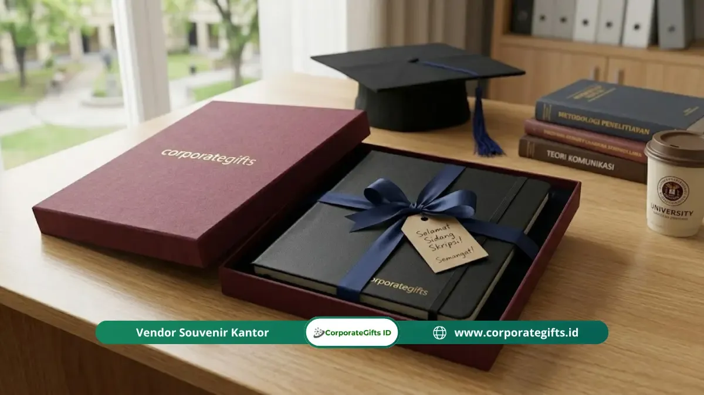

Corporate Gifts ID - Set alat tulis premium dan notebook hardcover adalah kado sidang skripsi yang praktis dan tahan lama, karena langsung terpakai untuk wawancara kerja, rapat, dan mencatat di bulan-bulan pertama karier. Set ini bisa dirangkai mulai Rp75.000 (dua pulpen gel, satu mechanical pencil, dan pouch), lalu ditingkatkan hingga Rp250.000 ke atas dengan notebook Moleskine atau Leuchtturm1917 dan pulpen dalam case metal.
Poin Kunci Set Alat Tulis & Notebook Sidang:
- Kesan Profesional: Alat tulis premium memberi kesan profesional saat penerima membawanya ke wawancara kerja dan rapat pertama.
- Daya Tahan Hardcover: Notebook hardcover tahan lama, halamannya tidak mudah rusak, dan nyaman dipakai menulis sambil berdiri.
- Kombinasi Ideal: Kombinasi ideal mencakup dua hingga tiga alat tulis berkualitas, satu notebook hardcover A5, dan kemasan pouch atau kotak hadiah.
- Anggaran Fleksibel: Anggaran mulai Rp75.000 sudah cukup untuk set alat tulis fungsional yang berkesan.
- Merek Terpercaya: Merek seperti Pilot, Pentel, Uni-ball, Staedtler, Moleskine, dan Leuchtturm1917 mudah ditemukan di Indonesia.
Mengapa Alat Tulis Masih Relevan di Era Digital sebagai Kado Sidang Skripsi?
Alat tulis masih relevan sebagai kado sidang skripsi karena profesional muda tetap memakainya setiap hari di rapat, wawancara, dan presentasi, dan mencatat dengan tangan terbukti membantu pemahaman konsep.
Dunia kerja modern belum meninggalkan pena dan buku catatan. Rapat klien, presentasi di papan tulis, catatan cepat di sela telepon, tanda tangan dokumen, hingga sketsa konsep awal semuanya membutuhkan alat tulis yang andal.
Studi Mueller dan Oppenheimer (2014) di jurnal Psychological Science menemukan bahwa mahasiswa yang mencatat dengan tangan cenderung menjawab pertanyaan konseptual lebih baik dibanding mereka yang mengetik di laptop, karena tulisan tangan mendorong mereka merangkum dengan kata sendiri. Beberapa replikasi setelahnya menunjukkan efek yang lebih kecil, sehingga temuan ini lebih tepat dipahami sebagai kecenderungan, bukan angka pasti.
Bagi lulusan baru, momen setelah sidang skripsi biasanya langsung disusul wawancara kerja, onboarding, dan bulan-bulan pertama di kantor. Di fase ini, alat tulis yang layak dibawa jauh lebih berguna dibanding pulpen plastik murah yang biasa dipakai saat kuliah.
Apa yang Membedakan Alat Tulis Premium dari Alat Tulis Biasa?
Alat tulis premium berbeda dari alat tulis biasa pada empat hal: material body yang lebih solid, tinta yang lebih lancar dan tahan lama, desain ergonomis untuk pemakaian panjang, dan penampilan yang layak dibawa ke lingkungan profesional.
Material Body
Pulpen premium umumnya menggunakan body metal atau plastik tebal berkualitas tinggi yang tidak mudah retak maupun melentur.
Pegangan yang solid membuat penerima lebih percaya diri saat menandatangani dokumen atau mencatat di depan rekan kerja senior.
Kualitas Tinta
Tinta gel premium mengalir lebih lancar, tidak mudah mengering saat lama tidak dipakai, dan minim bocor di saku atau tas.
Pilot G2, Pentel Energel, dan Uni-ball Signo termasuk pilihan populer di kalangan profesional yang mementingkan kualitas tulisan.
Desain Ergonomis
Pulpen premium memperhatikan distribusi berat dan diameter genggaman agar nyaman dipakai dalam durasi panjang.
Hal ini penting bagi penerima yang akan banyak mencatat di rapat atau menulis di notebook jurnal.
Penampilan Profesional
Tampilan pulpen premium cukup sopan untuk dibawa ke wawancara kerja, rapat dengan klien, maupun presentasi. Alat tulis murahan justru bisa merusak kesan pertama yang ingin dibangun di lingkungan kerja baru.

Kombinasi notebook hardcover dan pulpen eksklusif memberikan impresi berwibawa di dunia kerja nyata.
Apa Keunggulan Notebook Hardcover Dibanding Notebook Biasa untuk Kado?
Notebook hardcover unggul karena lebih tahan lama, tampil profesional saat dibuka di rapat, halamannya tidak mudah tertekuk atau robek, dan menyediakan alas menulis yang stabil tanpa perlu meja.
Daya Tahan Melewati Bulan-Bulan Pertama Kerja
Cover keras melindungi halaman dari tekukan, sobekan, dan kerusakan akibat tumpahan.
Notebook hardcover yang dibawa dalam tas kerja setiap hari selama setahun umumnya masih terlihat rapi dan layak dibuka di depan klien.
Landasan Menulis Mandiri
Cover yang kaku memungkinkan penerima menulis tanpa membutuhkan permukaan meja yang datar.
Ini berguna saat mencatat sambil berdiri di acara, dalam perjalanan, atau ketika semua kursi di ruang rapat sudah terisi.
Kesan Profesional yang Konsisten
Notebook hardcover berkualitas seperti Moleskine, Leuchtturm1917, atau alternatif lokal yang baik memberi kesan profesional setiap kali dikeluarkan dari tas.
Ini berbeda dari notebook softcover murah yang biasanya cepat menunjukkan tanda keausan setelah beberapa minggu.
Pilihan Halaman yang Lebih Kaya
Notebook hardcover premium tersedia dengan halaman bergaris, dot grid, polos, dan layout planner.
Pilih halaman bergaris untuk penerima yang suka mencatat poin-poin, dan dot grid untuk yang gemar membuat sketsa atau diagram.
Bagaimana Cara Menyusun Set Alat Tulis Kado yang Terkesan Premium?
Set alat tulis kado terkesan premium jika Anda mengombinasikan dua hingga tiga alat tulis berkualitas dengan satu notebook hardcover, lalu mengemasnya dalam pouch kain atau kotak hadiah elegan.
Anggaran besar tidak wajib untuk menghasilkan set yang terlihat dipersiapkan dengan penuh perhatian. Berikut kombinasi yang efektif berdasarkan anggaran:
| Anggaran | Rekomendasi Hadiah |
|---|---|
| Rp75.000 - Rp150.000 | Dua pulpen gel premium (Pilot G2 atau Pentel Energel) ditambah satu mechanical pencil berkualitas, dikemas dalam pouch kanvas sederhana. Tambahkan notebook A5 bergaris berkualitas sebagai pelengkap jika anggaran memungkinkan. |
| Rp150.000 - Rp250.000 | Set tiga pulpen premium dari merek berbeda (satu ballpoint, satu gel, satu fine liner), satu notebook hardcover A5, dan highlighter dua warna. Kemas dalam pouch kulit sintetis atau kotak hadiah berlapis untuk tampilan yang lebih eksklusif. |
| Rp250.000 ke atas | Notebook Moleskine atau Leuchtturm1917 A5, set pulpen premium dalam case metal, dan sticky notes premium dalam satu paket kado. Tambahkan kartu ucapan dengan pesan personal untuk menyempurnakan keseluruhan kado. |
Untuk tampilan maksimal, pilih semua item dalam satu palet warna yang konsisten. Kombinasi hitam-putih dengan aksen emas, misalnya, memberi kesan elegan yang cocok untuk berbagai kepribadian penerima.
Kado alat tulis premium ini melengkapi kado sidang skripsi fungsional lainnya dengan sempurna jika Anda ingin memberikan paket hadiah yang komprehensif.
FAQ tentang Set Alat Tulis sebagai Kado Sidang Skripsi
Kesimpulan
Set alat tulis premium dan notebook hardcover membuktikan bahwa kado tidak harus mahal untuk berkesan. Kombinasi yang tepat, kemasan yang rapi, dan produk dari merek yang terbukti kualitasnya menghasilkan kado yang dipakai penerima setiap hari di pekerjaan pertamanya.
Kado ini bukan hanya tentang alat tulis, tetapi tentang membantu seseorang tampil profesional sejak hari pertama kariernya.